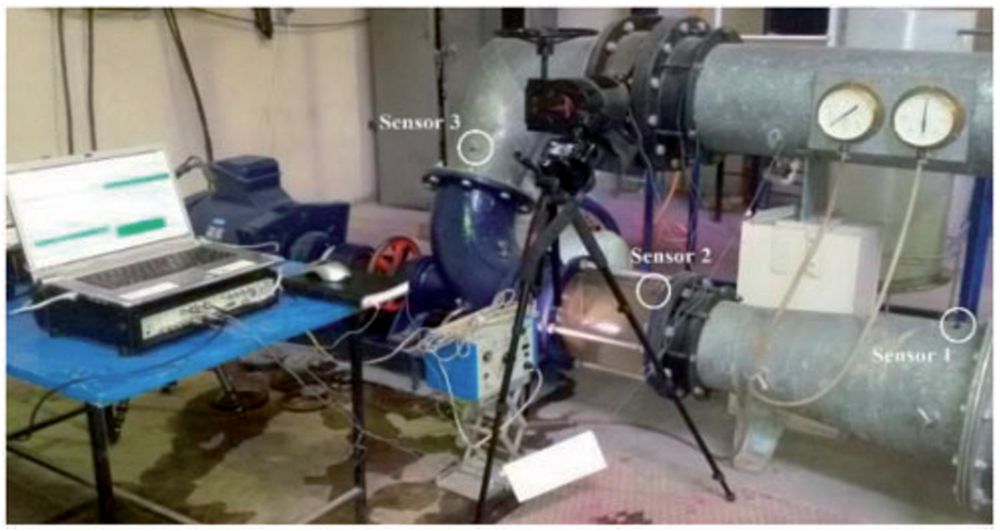

Cavitation intensity monitoring in an axial flow pump based on vibration signals using multi-class support vector machine
Proceedings of the Institution of Mechanical Engineers, Part C., 232(17), pp.3013-3026, 2017. Journal Article

Abstract
The cavitation phenomenon, which is rampant in axial flow pumps, should be avoided due to its undesirable effects on the pump’s performance. Therefore, in this study the cavitation performance of an axial flow pump is monitored based on vibration signals. For this purpose, experimental vibration data is collected for five different levels of cavitation. Time-domain features are extracted based on statistical behavior of the measured signals. Considering the nonlinear and high-frequency nature of the cavitation noise in the signal, the second set of features including both time- and frequency-domain parameters are obtained based on statistical behavior of the first intrinsic mode function, via empirical mode decomposition combined with Hilbert Huang transform. Compensation distance evaluation technique is applied to pick the appropriate features. Multi-class support vector machine is trained for classification of the various levels of cavitation intensity. The results of testing the support vector machine algorithm show that the developed methodology can monitor the pump’s cavitation intensity in onsite operation with high accuracy.